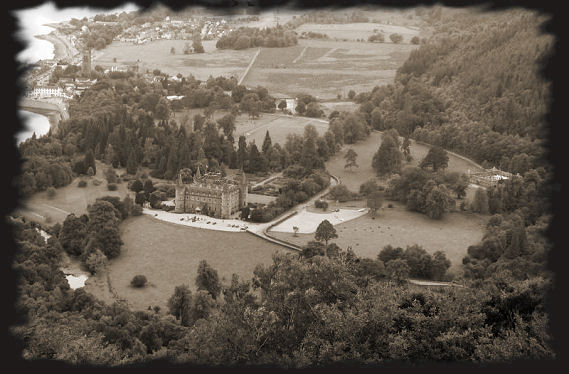
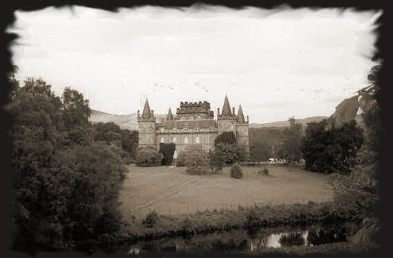
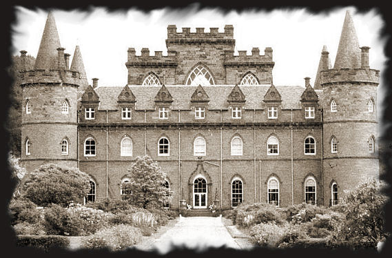

Sur les traces de Clan Campbell Scotch Whisky…
Depuis toujours, l'histoire du clan Campbell est intimement liée à l'histoire du whisky écossais.
En effet, les Campbell d'Argyll et notamment Sir Colin Campbell, premier chef connu de la dynastie, n'ont cessé de contribuer dès le XIIIème siècle à la défense de l'Écosse et à la renommée d'un pays bien connu pour sa célèbre eau-de-vie. C'est au XVIIe siècle que le whisky du clan Campbell entre définitivement dans l'histoire avec Marie Stuart qui, profitant d'une visite au château d'Inveraray chez sa soeur, la Comtesse d'Argyll, découvre le fameux Scotch whisky Clan Campbell. Aujourd'hui, le Duc d'Argyll, chef du Clan Campbell, reste le garant des traditions et continue de veiller en permanence à la qualité de la marque qui porte son nom.
Le château d'Inveraray est toujours la demeure familiale du clan Campbell, ducs d'Argyll depuis 1701.

Construit en 1745 sur les ruines d'un château du XVe siècle, les tours furent ajoutées en 1877.

La tour centrale où sont exposées les armes des Campbells possède le plafond le plus haut d'Écosse.
